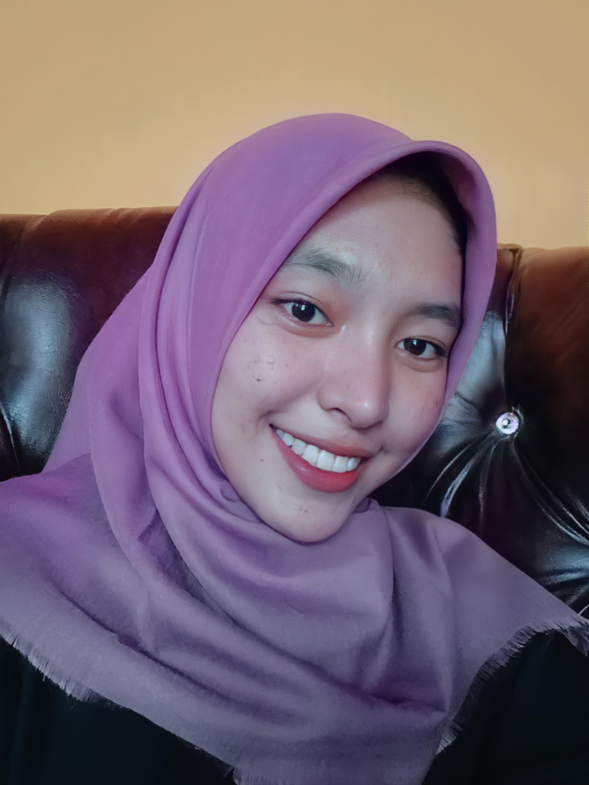

HAALLLLOOOO!!!
Namaku Rizka Wahyuni, biasa dipanggil ika atau rizka. Asal ku dari Rokan Hilir, aku anak pertama dari tiga bersaudara, aku lahir di Sintong, tanggal 31 Agustus 2002. Aku tamatan dari MAN 2 Pekanbaru, ya aku sudah di Pekanbaru dari sejak SMA. Setelah tamat dari SMA aku berencana mengambil jurusan psikologi IPA, namun karena jurusan psikologi IPA yang terdekat ada di UNAND orang tuaku tidak mengizinkanku untuk mengambil jurusan tersebut, orang tuaku tidak ingin aku terlalu jauh karena dari SMP aku sudah merantau. Setelah aku berfikir PTN mana yang akan ku tuju aku memilih UNRI atau USU tentunya itu juga saran dari orang tua. Alasan utama ku memilih jurusan Teknik Informtika awalnya karena disuruh oleh orang tua dan sempat merasa salah jurusan, namun aku selalu menanamkan didalam pikiranku bahwa apa yang dipilih oleh orang tua pasti akan berjalan dengan baik dan seiring berjalannya waktu aku berusaha untuk terus menerima, mengikuti dan menjalani perkuliahan semampuku dan sebisaku. Walaupun aku sering mengeluh karena banyak hal yang belum aku pahami, tapi aku tetap harus jalani dan menerima dengan baik, satu hal yang paling penting adalah menghapus rasa sesal. Aku berharap selama diperkuliahan aku bisa memahami banyak hal tentang Teknik Informatika. Oiya selain alasan utamanya karena orang tua aku juga memiliki beberapa alasan memilih jurusan Teknik Informatika.
Berikut beberapa alasanku memilih jurusan Teknik Informatika:
Oke kali ini aku akan membahas hobi ku, aku senang menonton film dan mendengarkan musik. Biasanya aku menonton film yang membuatku tertarik dan berbagai genre seperti action, horror, romance dan comedi. Tapi aku menonton film jika benar-benar punya waktu yang luang, aku lebih sering mendengarkan musik. Aku mendengarkan musik genre apapun yang penting aku suka dan yang sesuai dengan suasana hatiku tapi kadang-kadang ga sesuai juga sama isi hati. Aku mendengarkan musik biasanya saat mencuci piring, bersih-bersih rumah, mau tidur, dan saat mengerjakan tugas.
Musik yang akhir-akhir ini aku dengarkan:
Ini salah satu lagu favorit aku dari SMA
Closer - The Chainsmokers
Sebelum mengakhiri web ini aku kasih sedikit video motivasi dari tiktok